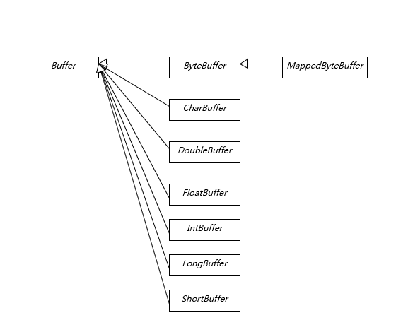

第12讲 | Java有几种文件拷贝方式？哪一种最高效？
我在专栏上一讲提到，NIO 不止是多路复用，NIO 2 也不只是异步 IO，今天我们来看看 Java IO 体系中，其他不可忽略的部分。
今天我要问你的问题是，Java 有几种文件拷贝方式？哪一种最高效？
典型回答
Java 有多种比较典型的文件拷贝实现方式，比如：
利用 java.io 类库，直接为源文件构建一个 FileInputStream 读取，然后再为目标文件构建一个 FileOutputStream，完成写入工作。
public static void copyFileByStream(File source, File dest) throws
IOException {
try (InputStream is = new FileInputStream(source);
OutputStream os = new FileOutputStream(dest);){
byte[] buffer = new byte[1024];
int length;
while ((length = is.read(buffer)) > 0) {
os.write(buffer, 0, length);
}
}
}
或者，利用 java.nio 类库提供的 transferTo 或 transferFrom 方法实现。
public static void copyFileByChannel(File source, File dest) throws
IOException {
try (FileChannel sourceChannel = new FileInputStream(source)
.getChannel();
FileChannel targetChannel = new FileOutputStream(dest).getChannel
();){
for (long count = sourceChannel.size() ;count>0 ;) {
long transferred = sourceChannel.transferTo(
sourceChannel.position(), count, targetChannel); sourceChannel.position(sourceChannel.position() + transferred);
count -= transferred;
}
}
}
当然，Java 标准类库本身已经提供了几种 Files.copy 的实现。
对于 Copy 的效率，这个其实与操作系统和配置等情况相关，总体上来说，NIO transferTo/From 的方式可能更快，因为它更能利用现代操作系统底层机制，避免不必要拷贝和上下文切换。
考点分析
今天这个问题，从面试的角度来看，确实是一个面试考察的点，针对我上面的典型回答，面试官还可能会从实践角度，或者 IO 底层实现机制等方面进一步提问。这一讲的内容从面试题出发，主要还是为了让你进一步加深对 Java IO 类库设计和实现的了解。
从实践角度，我前面并没有明确说 NIO transfer 的方案一定最快，真实情况也确实未必如此。我们可以根据理论分析给出可行的推断，保持合理的怀疑，给出验证结论的思路，有时候面试官考察的就是如何将猜测变成可验证的结论，思考方式远比记住结论重要。
从技术角度展开，下面这些方面值得注意：
- 不同的 copy 方式，底层机制有什么区别？
- 为什么零拷贝（zero-copy）可能有性能优势？
- Buffer 分类与使用。
- Direct Buffer 对垃圾收集等方面的影响与实践选择。
接下来，我们一起来分析一下吧。
知识扩展
\1. 拷贝实现机制分析
先来理解一下，前面实现的不同拷贝方法，本质上有什么明显的区别。
首先，你需要理解用户态空间（User Space）和内核态空间（Kernel Space），这是操作系统层面的基本概念，操作系统内核、硬件驱动等运行在内核态空间，具有相对高的特权；而用户态空间，则是给普通应用和服务使用。你可以参考：https://en.wikipedia.org/wiki/User_space。
当我们使用输入输出流进行读写时，实际上是进行了多次上下文切换，比如应用读取数据时，先在内核态将数据从磁盘读取到内核缓存，再切换到用户态将数据从内核缓存读取到用户缓存。
写入操作也是类似，仅仅是步骤相反，你可以参考下面这张图。

所以，这种方式会带来一定的额外开销，可能会降低 IO 效率。
而基于 NIO transferTo 的实现方式，在 Linux 和 Unix 上，则会使用到零拷贝技术，数据传输并不需要用户态参与，省去了上下文切换的开销和不必要的内存拷贝，进而可能提高应用拷贝性能。注意，transferTo 不仅仅是可以用在文件拷贝中，与其类似的，例如读取磁盘文件，然后进行 Socket 发送，同样可以享受这种机制带来的性能和扩展性提高。
transferTo 的传输过程是：

2.Java IO/NIO 源码结构
前面我在典型回答中提了第三种方式，即 Java 标准库也提供了文件拷贝方法（java.nio.file.Files.copy）。如果你这样回答，就一定要小心了，因为很少有问题的答案是仅仅调用某个方法。从面试的角度，面试官往往会追问：既然你提到了标准库，那么它是怎么实现的呢？有的公司面试官以喜欢追问而出名，直到追问到你说不知道。
其实，这个问题的答案还真不是那么直观，因为实际上有几个不同的 copy 方法。
public static Path copy(Path source, Path target, CopyOption... options)
throws IOException
public static long copy(InputStream in, Path target, CopyOption... options)
throws IOException
public static long copy(Path source, OutputStream out)
throws IOException
可以看到，copy 不仅仅是支持文件之间操作，没有人限定输入输出流一定是针对文件的，这是两个很实用的工具方法。
后面两种 copy 实现，能够在方法实现里直接看到使用的是 InputStream.transferTo()，你可以直接看源码，其内部实现其实是 stream 在用户态的读写；而对于第一种方法的分析过程要相对麻烦一些，可以参考下面片段。简单起见，我只分析同类型文件系统拷贝过程。
public static Path copy(Path source, Path target, CopyOption... options)
throws IOException
{
FileSystemProvider provider = provider(source);
if (provider(target) == provider) {
// same provider
provider.copy(source, target, options);// 这是本文分析的路径
} else {
// different providers
CopyMoveHelper.copyToForeignTarget(source, target, options);
}
return target;
}
我把源码分析过程简单记录如下，JDK 的源代码中，内部实现和公共 API 定义也不是可以能够简单关联上的，NIO 部分代码甚至是定义为模板而不是 Java 源文件，在 build 过程自动生成源码，下面顺便介绍一下部分 JDK 代码机制和如何绕过隐藏障碍。
- 首先，直接跟踪，发现 FileSystemProvider 只是个抽象类，阅读它的源码能够理解到，原来文件系统实际逻辑存在于 JDK 内部实现里，公共 API 其实是通过 ServiceLoader 机制加载一系列文件系统实现，然后提供服务。
- 我们可以在 JDK 源码里搜索 FileSystemProvider 和 nio，可以定位到sun/nio/fs，我们知道 NIO 底层是和操作系统紧密相关的，所以每个平台都有自己的部分特有文件系统逻辑。
- 省略掉一些细节，最后我们一步步定位到 UnixFileSystemProvider → UnixCopyFile.Transfer，发现这是个本地方法。
- 最后，明确定位到UnixCopyFile.c，其内部实现清楚说明竟然只是简单的用户态空间拷贝！
所以，我们明确这个最常见的 copy 方法其实不是利用 transferTo，而是本地技术实现的用户态拷贝。
前面谈了不少机制和源码，我简单从实践角度总结一下，如何提高类似拷贝等 IO 操作的性能，有一些宽泛的原则：
- 在程序中，使用缓存等机制，合理减少 IO 次数（在网络通信中，如 TCP 传输，window 大小也可以看作是类似思路）。
- 使用 transferTo 等机制，减少上下文切换和额外 IO 操作。
- 尽量减少不必要的转换过程，比如编解码；对象序列化和反序列化，比如操作文本文件或者网络通信，如果不是过程中需要使用文本信息，可以考虑不要将二进制信息转换成字符串，直接传输二进制信息。
\3. 掌握 NIO Buffer
我在上一讲提到 Buffer 是 NIO 操作数据的基本工具，Java 为每种原始数据类型都提供了相应的 Buffer 实现（布尔除外），所以掌握和使用 Buffer 是十分必要的，尤其是涉及 Direct Buffer 等使用，因为其在垃圾收集等方面的特殊性，更要重点掌握。

Buffer 有几个基本属性：
- capcity，它反映这个 Buffer 到底有多大，也就是数组的长度。
- position，要操作的数据起始位置。
- limit，相当于操作的限额。在读取或者写入时，limit 的意义很明显是不一样的。比如，读取操作时，很可能将 limit 设置到所容纳数据的上限；而在写入时，则会设置容量或容量以下的可写限度。
- mark，记录上一次 postion 的位置，默认是 0，算是一个便利性的考虑，往往不是必须的。
前面三个是我们日常使用最频繁的，我简单梳理下 Buffer 的基本操作：
- 我们创建了一个 ByteBuffer，准备放入数据，capcity 当然就是缓冲区大小，而 position 就是 0，limit 默认就是 capcity 的大小。
- 当我们写入几个字节的数据时，position 就会跟着水涨船高，但是它不可能超过 limit 的大小。
- 如果我们想把前面写入的数据读出来，需要调用 flip 方法，将 position 设置为 0，limit 设置为以前的 position 那里。
- 如果还想从头再读一遍，可以调用 rewind，让 limit 不变，position 再次设置为 0。
更进一步的详细使用，我建议参考相关教程。
4.Direct Buffer 和垃圾收集
我这里重点介绍两种特别的 Buffer。
- Direct Buffer：如果我们看 Buffer 的方法定义，你会发现它定义了 isDirect() 方法，返回当前 Buffer 是否是 Direct 类型。这是因为 Java 提供了堆内和堆外（Direct）Buffer，我们可以以它的 allocate 或者 allocateDirect 方法直接创建。
- MappedByteBuffer：它将文件按照指定大小直接映射为内存区域，当程序访问这个内存区域时将直接操作这块儿文件数据，省去了将数据从内核空间向用户空间传输的损耗。我们可以使用FileChannel.map创建 MappedByteBuffer，它本质上也是种 Direct Buffer。
在实际使用中，Java 会尽量对 Direct Buffer 仅做本地 IO 操作，对于很多大数据量的 IO 密集操作，可能会带来非常大的性能优势，因为：
- Direct Buffer 生命周期内内存地址都不会再发生更改，进而内核可以安全地对其进行访问，很多 IO 操作会很高效。
- 减少了堆内对象存储的可能额外维护工作，所以访问效率可能有所提高。
但是请注意，Direct Buffer 创建和销毁过程中，都会比一般的堆内 Buffer 增加部分开销，所以通常都建议用于长期使用、数据较大的场景。
使用 Direct Buffer，我们需要清楚它对内存和 JVM 参数的影响。首先，因为它不在堆上，所以 Xmx 之类参数，其实并不能影响 Direct Buffer 等堆外成员所使用的内存额度，我们可以使用下面参数设置大小：
-XX:MaxDirectMemorySize=512M
从参数设置和内存问题排查角度来看，这意味着我们在计算 Java 可以使用的内存大小的时候，不能只考虑堆的需要，还有 Direct Buffer 等一系列堆外因素。如果出现内存不足，堆外内存占用也是一种可能性。
另外，大多数垃圾收集过程中，都不会主动收集 Direct Buffer，它的垃圾收集过程，就是基于我在专栏前面所介绍的 Cleaner（一个内部实现）和幻象引用（PhantomReference）机制，其本身不是 public 类型，内部实现了一个 Deallocator 负责销毁的逻辑。对它的销毁往往要拖到 full GC 的时候，所以使用不当很容易导致 OutOfMemoryError。
对于 Direct Buffer 的回收，我有几个建议：
- 在应用程序中，显式地调用 System.gc() 来强制触发。
- 另外一种思路是，在大量使用 Direct Buffer 的部分框架中，框架会自己在程序中调用释放方法，Netty 就是这么做的，有兴趣可以参考其实现（PlatformDependent0）。
- 重复使用 Direct Buffer。
\5. 跟踪和诊断 Direct Buffer 内存占用？
因为通常的垃圾收集日志等记录，并不包含 Direct Buffer 等信息，所以 Direct Buffer 内存诊断也是个比较头疼的事情。幸好，在 JDK 8 之后的版本，我们可以方便地使用 Native Memory Tracking（NMT）特性来进行诊断，你可以在程序启动时加上下面参数：
-XX:NativeMemoryTracking={summary|detail}
注意，激活 NMT 通常都会导致 JVM 出现 5%~10% 的性能下降，请谨慎考虑。
运行时，可以采用下面命令进行交互式对比：
// 打印 NMT 信息
jcmd <pid> VM.native_memory detail
// 进行 baseline，以对比分配内存变化
jcmd <pid> VM.native_memory baseline
// 进行 baseline，以对比分配内存变化
jcmd <pid> VM.native_memory detail.diff
我们可以在 Internal 部分发现 Direct Buffer 内存使用的信息，这是因为其底层实际是利用 unsafe_allocatememory。严格说，这不是 JVM 内部使用的内存，所以在 JDK 11 以后，其实它是归类在 other 部分里。
JDK 9 的输出片段如下，“+”表示的就是 diff 命令发现的分配变化：
-Internal (reserved=679KB +4KB, committed=679KB +4KB)
(malloc=615KB +4KB #1571 +4)
(mmap: reserved=64KB, committed=64KB)
注意：JVM 的堆外内存远不止 Direct Buffer，NMT 输出的信息当然也远不止这些，我在专栏后面有综合分析更加具体的内存结构的主题。
今天我分析了 Java IO/NIO 底层文件操作数据的机制，以及如何实现零拷贝的高性能操作，梳理了 Buffer 的使用和类型，并针对 Direct Buffer 的生命周期管理和诊断进行了较详细的分析。
一课一练
关于今天我们讨论的题目你做到心中有数了吗？你可以思考下，如果我们需要在 channel 读取的过程中，将不同片段写入到相应的 Buffer 里面（类似二进制消息分拆成消息头、消息体等），可以采用 NIO 的什么机制做到呢？